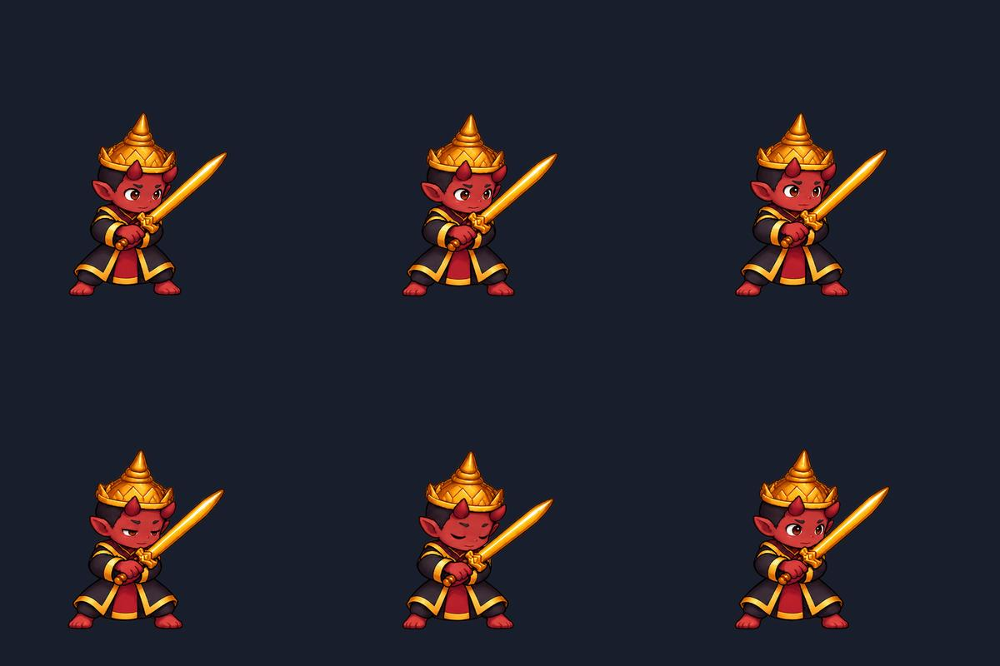
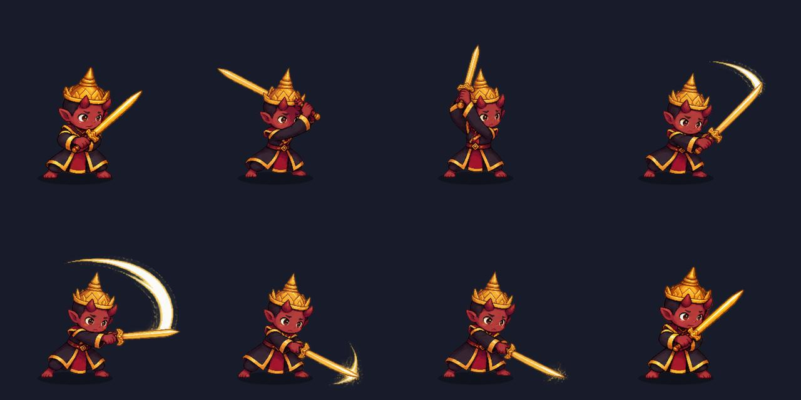

AVEGEE / ISOLATED ART EXPERIMENT
Yama — ลองจังหวะการเคลื่อนไหว
ดูท่ายืนกอดหนังสือและเปรียบเทียบท่าเดินบนแผนที่ →
ท่ายืนพักวาดใหม่ 6 เฟรม พร้อมท่าฟันดาบเดิม 8 เฟรม สำหรับเปรียบเทียบ
ท่ายืนพัก: วาดเฟรมใหม่ด้วย ImageGen · เล่นภาพแต่ละท่าโดยไม่มีการยืด–หดตัวละคร · ยังไม่ได้ส่งออกด้วย SPA
01 / ยืนหายใจ
เฟรมวาดใหม่: เปลี่ยนท่าไหล่ แขน มุมดาบ และกะพริบตา · ไม่ยืด–หดภาพ
8 เฟรม · ท่าโจมตี 580 ms · เว้นจังหวะ 900 ms ระหว่างรอบ · ประกายเพิ่มจาก Canvas แยกจากภาพต้นฉบับ
ท่ายืนพักวาดใหม่ทั้ง 6 เฟรม

ท่าฟันดาบเดิมทั้ง 8 เฟรม
